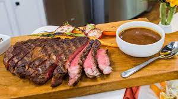
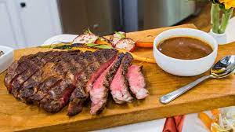

Fish
Crispy Pan Fried Fish
Pan Fried Fish is a thing of beauty, with its beautiful crispy golden crust and juicy flesh inside. It’s a super quick dinner because cooking fish fillets on the stove takes less than 5 minutes!
Wondering how to stop fish sticking to the pan? It’s easy: use a heavy based skillet (doesn’t need to be non stick), heat the pan before adding oil, and most importantly – do not move move the fish until it naturally releases from the pan!
How to cook fish on the stove – perfectly every time!
1. Use a heavy duty skillet – it DOES NOT need to be a non stick pan! Contrary to popular belief, it’s not just about using a non stick pan. A thin, cheap non stick pan will cause the fish to be in closer and harsher contact with the stove, causing the fish to brown unevenly in the few minutes it’s on the stove. Some crispy patches, some not so crispy ones.
2. Heat the pan first before adding the oil – I have NEVER had problems with fish sticking to the pan since I adopted this technique. It’s just an easy way to ensure the oil is hot enough but not too hot (a common mistake people make). To do this, just heat a dry pan, and as soon as you see small wisps of smoke, add oil, swirl to coat base, then immediately add the fish.
3. Pat fish dry – dry fish = crispier surface. Especially important for thawed frozen fish.
4. Shake off excess flour – coat well in flour but vigorously shake off excess (too much flour = crispy crust falls off)
5. Do not move until it releases naturally – Most fish fillets will initially stick to the pan as they start to cook (unless you’re using so much oil you’re basically shallow frying them). But it naturally releases once the surface is cooked and golden.
6. So give it a nudge, and if it doesn’t want to move, then it means that it’s not ready. So just leave it and try again in another 15 seconds or so!
7. Transfer to plate to cool, then enjoy!